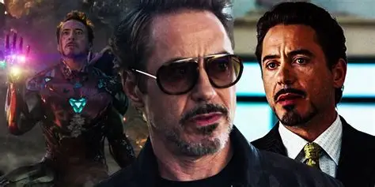
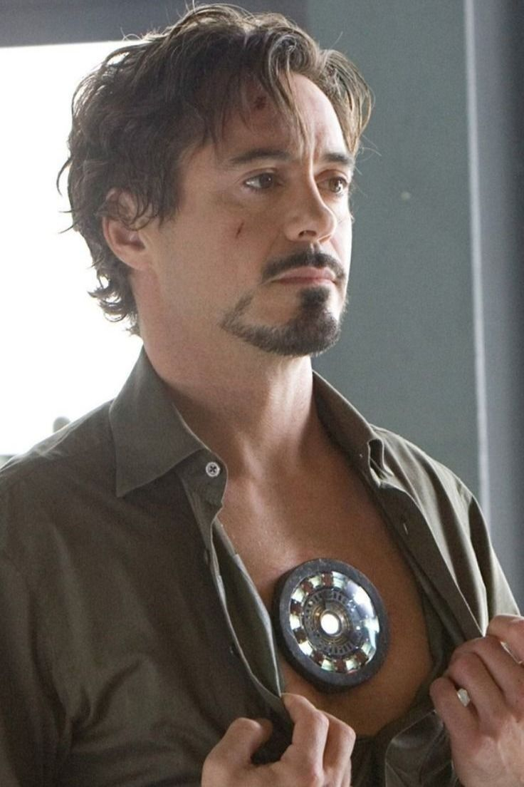
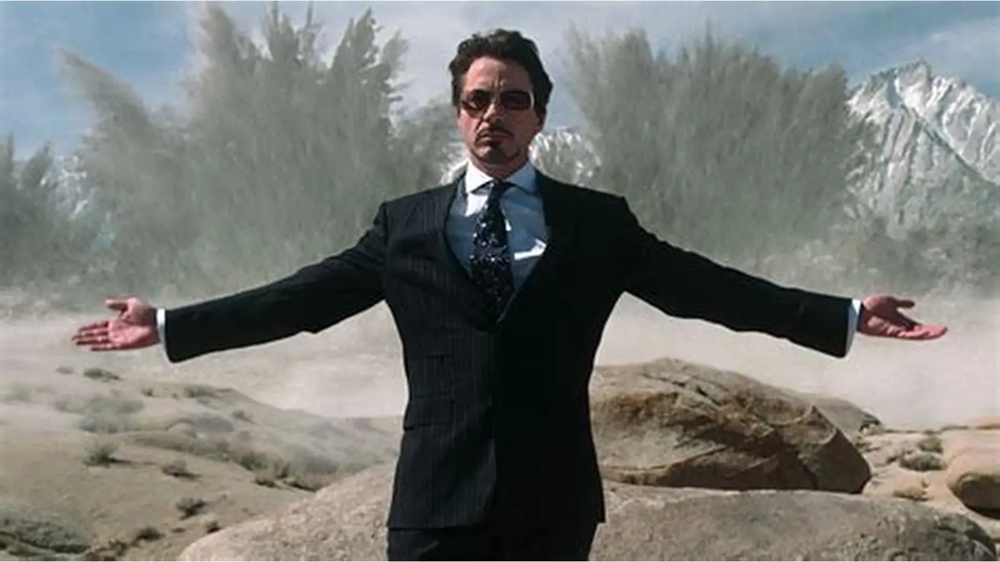
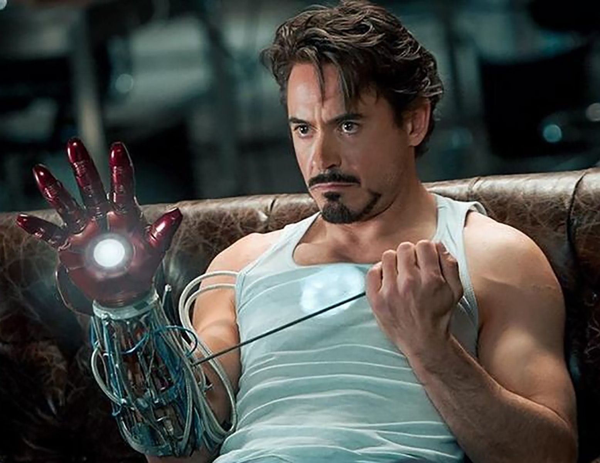

Historia
Anthony Edward Stark nació el 29 de mayo de 1970, en Manhattan, Nueva York, hijo de Howard Stark, un famoso inventor y empresario,
y Maria Stark, una socialité y filántropa de Nueva York. Al crecer bajo los ojos del mayordomo Edwin Jarvis, su vida se caracterizó por
una relación fría con su padre. Al ver que su hijo podía lograr grandes cosas, Howard trató de inspirarlo con conversaciones constantes sobre
su propio papel en la creación del Capitán América, esto en cambio amargó a Stark, quien sintió que su padre estaba más orgulloso de sus creaciones
que de su familia. Stark demostró ser un niño prodigio brillante y único, lo que lo llevó a asistir al MIT durante dos años a partir de los 15 años.
El 16 de diciembre de 1991, cuando Stark tenía 21 años, sus padres se fueron a las Bahamas, pero planearon detenerse en el Pentágono para entregar el suero
del supersoldado que él había reconstruido. En su camino hacia allí, ambos murieron en un accidente automovilístico, más tarde se reveló que fue un asesinato
llevado a cabo por el Soldado del Invierno en nombre de Hydra para robar el suero. Como resultado, Stark heredó la compañía de su padre, convirtiéndose en el
propietario de Industrias Stark. Con los años, se hizo conocido como diseñador e inventor de armas y vivió un estilo de vida de playboy. En 1999, para la llegada
del nuevo milenio, asistió a una conferencia en Berna donde conoció a los científicos Maya Hansen, inventora del tratamiento regenerativo experimental Extremis,
y a Aldrich Killian, de quien rechazo una oferta de trabajo para Advanced Idea Mechanics.

biografiaaaInformación
- inventor
- filantropo
- Genio brillante
- Valiente y decidido
- con un ego gigante
- narcisista
- creativoo
- “Yo soy Iron Man” Avengers: Endgame
- “I am Iron Man” (Revela su identidad) Iron Man
- Sacrificio nuclear en Nueva York The Avengers
TOP mejores momentos
Ficha técnica
| edad | pesos | estatura | primera aparicion | debilidades | alias |
|---|---|---|---|---|---|
| tenia 53 años | sin armadura 84kg y con armadura 190kg | 1.85m | En el cómic Tales of Suspense #39 (1963) | Su corazón (necesita tecnología para mantenerse con vida en varias versiones) Dependencia tecnológica (sin su armadura es solo un humano) Su ego y arrogancia |
Iron Man El Vengador Dorado Shellhead |
club de fans
Galería


